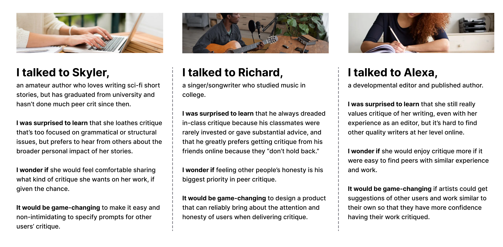
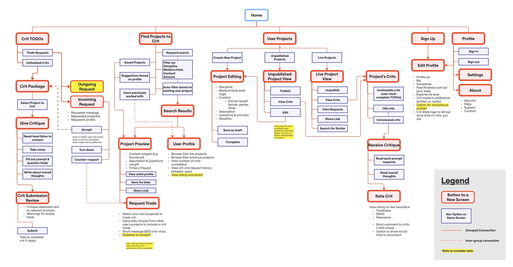
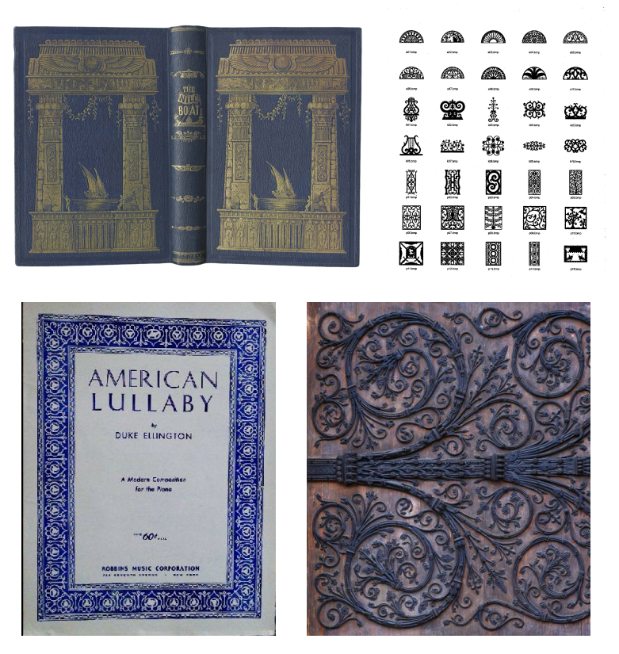
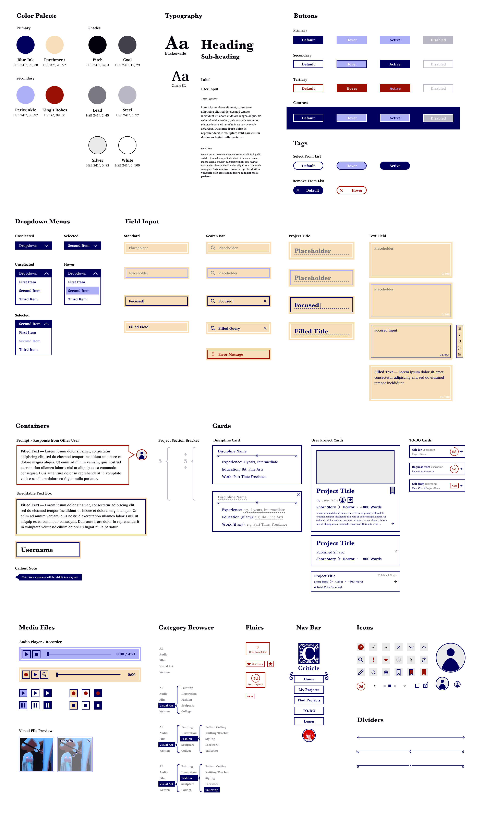

As excited as I was about my idea for a centralized, digital solution for peer critique, I had endless questions myself about how such a thing could manifest.
I've been a part of several group critiques myself, but I knew that empathizing with different artists that had other experiences and attitudes towards crit was the most important step of all.
So, I started by drafting a research plan for asking the right questions to the right people, and understand what their fears and dreams are for digital critique.
Some questions that I asked my interviewees included:
- In your words, what are the goals of peer critique?
- Is critique on your work an important part of your artistic process?
- Try to walk me through your emotions when you are expecting and receiving critique from someone.
- What are your concerns about giving and receiving online critique of your work?
The artists that I spoke to worked in disciplines such as music, creative writing, photography, and painting, ranging in experience from amateur to professional.
One participant was a developmental editor who has years of experience giving critique to fiction writers.
They also had differing opinions of peer critique, with one describing it as "vital" to her artistic process, another as "welcome", and another as "not usually helpful."
Maybe the most important finding in this process was that there wasn't too much of a difference necessarily between in-person and digitial critique, so much as there was a difference between synchronous and asynchronous.
For instance, critique over Zoom went mostly the same as it did in-person for all participants, but the elements of asynchronicity is what created both promise and trouble.
For all participants I talked to, having time to sit with a piece individually, experience it multiple times, gestate thought, and write a response created a different and better experience for both critic and artist than group critique in-person.
Of course, asychronicity created trouble in building trust between artists, which was the most valuable aspect of good critique for all participants.

Artist POVs

The wisdom I gathered from my interviews implied some important things about how my solution would work.
Chief among them, specificity and versatility will be essential to a well-designed product, so as to allow users to feel in-control of their critique, trust the expertise and investment of other users, and feel unrestrained in sharing all kinds of art digitally.
Read the Full User Research Document
Ideation & Architecture
02
Armed with the knowledge of very fruitful user research, I began ideating what kinds of features would serve my priorities of building trust, allowing specificity, and promoting community among similar artists.
Knowing how complicated artists' projects can become and how involved writing/recording detailed critique can get, I chose to design my solution for a desktop website.
I'm confident that a design for a mobile application could prove just as useful, but such an app would limit what kinds of files artists can upload, and could influence users to make shorter, less detailed critiques.
Some other examples of my decision-making at this stage included:
-
"I am definitively choosing to create a solution for asynchronous critique because artist interviews indicated this to be a more promising and rich form of critique, and one which is more convenient for most users.
There will also be less barrier to entry to artists who are nervous to talk one-on-one with strangers."
-
"A mutual rating system will possibly be critical in order to keep accountability for low-quality critiques.
Perhaps it is better to reward or publicly distinguish particularly high-quality and helpful critics rather than punish low-quality ones, so as to promote an aspirational culture of critique.
A rating system will improve the experience of low-quality critique recipients, who said in interviews they were often displeased when bad or unfocused critiques are met with no consequences."
-
"A good design will minimize the amount of anxiety artists are under when awaiting critique on their work.
Perhaps the best way to mitigate this anxiety is by scarce communication of the status of an in-process critique."
Sitemap
With these choices under my belt, the architecture of this critique-swapping platform was becoming more clear.
To formalize my ideas and work out the kinks, I created a top-down sitemap showing every step of the critique trade:

This more concrete outline directed me to some more important decisions, like distinguishing published vs. unpublished projects to allow users time to edit before making it visible to all users, and only showing previews of projects before trades are accepted so that artists aren't worried about full judgment of their work without permission.
User Flows
With the site architecture established, I sought to visualize the activity of several user personas that might use the platform.
These personas ought to represent a wide coverage of how artists would use the product and their goals.
You can see each persona below and their movements through the site by following arrows with their corresponding color.

Seeing the whole product design in one snapshot made me more confident going forward.
I liked seeing that as complicated of a task as finding another artist you trust and trading critique could be broken down into very simple segments with highly modular and reusable pages.
With this in mind, it was off to prototyping!
At this stage, I went straight to Figma to begin building my essential pages.

Homepage
My homepage was an opportunity to bring the most important information directly to the user.
Users must log in at least at least two times before receiving their first critique on a project, involving:
- project creation,
- sending/accepting a trade request,
- completing a critique for another user, and
- reviewing their received critique.
As a result, the homepage shows the most vital information in the flow, which helps artists stay on track to meet their goals.
Project Tagging
I established that the best UI design for specifying user critique style would be using selectable tags, but a harder challenge was nailing down how users would categorize their projects by discipline, medium, and genre to help other users easily find them.
I considered a hierarchical filter browser, but it wasn't versatile enough to let users define new keywords or to easily select across multiple disciplines.
Instead, I opted for a tag search, which lets users lookup by keyword and add to a list of tags for each relevant category.
This was much more flexible and was easiest for users to understand at first glance.
I quickly discovered the need for many cards, showing projects and requests with varying levels of detail and size, all to ward off design bloat and keep information to the bare essentials.
Search results should show the most information, while a list of a user's own projects only needs to show very few details.
To keep track of where messages, prompts, and responses are coming from on any given page, I opted for surrounding exchanged text with a quote bubble when not written by the user, as well as the profile picture of the source user.
While creating my wireframes, I realized how valuable it'd be to have users find curated lessons about critique in order to improve their skills over time.
This evolved into a Learn tab, with lessons and masterclasses searchable by category, keyword, or tag, and a lesson page boasting the credibility of its author.
Full Wireframes
Soon, my all my wireframes were done, with a complete design of the full site architecture and user flows.
Try the Low-Fi Prototype
User Testing
I needed fresh eyes on my prototype to see how my design compared to the vision of my user flows.
I recruited a few artists with different levels of technological proficiency and gave each of them six different taskflows to complete.
Here's how each task went:
- Sign up with a new account—Participants liked that the flow was very simple and focused directly on their experiences and feelings about critique, which got them excited for the rest of the design.
-
Create a new project—All participants found the New Project button easily on the My Projects tab, and liked the tag searches for filling out project information.
One user expressed they wished they didn't have to separate all their project contents into different sections (e.g. if they wanted an album of theirs to be listened to all the way through in one shot).
-
Find a similar project to send a Trade Request—Participants liked the several options for finding new projects, but one had trouble finding the Similar to a Project button as part of the task.
Another had trouble locating the Send a Trade Request button on the project page because they expected it to be at the bottom, not in the side toolbar.
-
Accept a Trade Request you received and fill out your critique—All participants finished this task relatively easily, correctly navigating to the TO-DO tab to find their requests and reviewing them.
Once again, a user said they expected Submit Critique button to be at the bottom of the page.
-
View a critique you received and give it a rating—Serious trouble was caused here by the lack of distinct design and clear terminology for critique completed for someone else, and critique received on one's own work.
Thus, participants misunderstood the task at first and located the wrong pages, and one even mistook her own project page for someone else's.
However, participants appreciated the design of the rating system and how it made them feel after receiving critique.
-
Read a lesson about critique—All participants had trouble finding the Learn tab, which was located under the profile page.
I needed to direct them there to finish the task, which couldn't have been a clearer sign I made a bad design choice.
That said, participants loved the design of the lesson page, and the ability to mark one as completed so they could set out to eventually read them all.
The most important fixes I needed to make were related to page hierarchy, clearer design codes for incoming vs. outgoing critique, and to move(!) the(!) Learn Tab(!!!) out of the user profile.
Some of these changes I made as priority revisions to the wireframes, but others needed to be tackled later as a larger redesign with the High-Fidelity Prototype.
Read the Full Low-Fi Testing Document
When beginning to pin down the brand identity of this product, I first made a chart of what values I'd like to project with my design, across a spectrum.
Important decisions here included:
- An established, elegant design to support the importance of good critique, and to evoke an established, educational feel.
- A soft authority, to dissuade potential troll users, but not too rigid to turn away any serious ones.
- A complex yet subtle design, one which inspires its users, but also provides a canvas for artists of many backgrounds to host their work without feeling overshadowed.
With my desired values in mind, I began to brainstorm what kinds of design upheld similar values.
Channeling the educational angle, I reached for book covers and manuscripts.
Intent on a natural, elegant design, I looked at wrought ironwork.
Taking inspiration from other artistic media, I looked at the kind of sheet music covers I grew up with.
With all these influences in mind, I then built up a branding package to solidify the visual identity of the product going ahead.

Branding Package

Criticle as a brand name is both serious and friendly at once, sounding more authoritative but reading more light-hearted.
The ornamental ironwork-inspired designs add an element of elegance and nature, but their light weight makes it feel less dense and cluttered.
The serif typefaces have literary connotations, but stay readable and accessible and small sizes.
Lastly, the tagline is straight to-the-point, with a no-joke attitude that advertises its legitimacy.
UI Kit
This design lead directly into my work on the UI Kit.
I had the same brand values and inspirations in mind, but needed a big arsenal of components to accomodate all the types of input and content that users will encounter.
Now, I had color to help subtly encode a component's function, such as using tan to signal text input and things users have written before, and using grays for similar components written by other users.
Periwinkle became the color of action, as it was often a color used in hover or pressed states, in item selection, and in media files, to signal interactability.
Finally, red was the color of distinction and importance, and was used sparingly to ensure it was eye-grabbing when used.

Armed with more than enough components, I headed into the high-fidelity redesign feeling confident and excited for the imminent transformation.
My biggest goals were to make pages more clearly distinct from one another while still maintaining consistent design, since low-fi testing showed me users were occasionally disoriented from the same-y look of project pages.
I was also intent on improving the hierarchical structure of the user project page, drawing more visual attention to the most time-sensitive and crucial information, and introducing a new section where users can view ratings they've received of Crits they've written.

First giving attention to the user project page, an important decision was to add to the project creation flow by letting users optionally add a banner image to their project page.
This choice improved how distinct each project page looked, and also made my next task of restructuring the page easier in service of a better visual hierarchy.
Putting the Received Crits and Received Trade Requests containers below the title line made them feel more like an aspect of the project than in the low-fi design, shown below.

Two other new features I added to project creation came as a direct result of low-fi testing.
Users now have the opportunity to add files to a project's moodboard as a way of more directly sharing their vision for the project, if they so choose.
Additionally, I decided that putting project contents into sections (even if only one section is needed) was a bad idea when a testing participant told me they wouldn't want songs they uploaded to be interrupted by sections.
This prompted me to put more control in the user's hands to choose how they want their project shown, and whether they want to write crit prompts for specific parts of their work or not.

Moving from simple values into color also brought about opportunities to make the most time-sensitive information the most visually apparent on the TO-DO page.
Now, Crits and Requests with less than 24 hours to complete have distinct red features that pop on the page.
Additionally, newly received Requests and newly assigned Crits are given their own flair with a heavy blue fill that is also attention grabbing, but doesn't weaken the impact of the red elements.
As a bonus, I've also added a section on the TO-DO page for newly received critiques without ratings, since a couple users from low-fi testing expected to find that information there as well as on the corresponding project page.
I put this section lower on the page, though, since completing a rating is never time-sensitive.
Usability Testing
The next phase of this iteration was to see what improved about the usability of my high-fidelity prototype, and where there are more opportunities for growth.
As with the previous testing phase, I recruited a variety of artists with varying levels of technological fluency, and had them walk me through their thought process while completing a set of tasks.
This time, I added a seventh task for gauging how easily users find ratings they've been given on their written critique.
I also asked each participant to give a rating of the overall user experience of the prototype and the likelihood they'd use Criticle if fully launched as a web platform.
Some key findings from testing included:
-
Participants were able to discern much more quickly than before the purpose of pages they visited at first glance.
Using much more specific language about the source and recipient of critiques and requests helped users feel more confident navigating the prototype and finding the information they needed.
-
Artists often really appreciate the ability to customize how their work is presented.
Participants very vocally liked the moodboard and banner features, as well as the control they have over sectioned vs. continuous project contents.
-
One participant said that, while they appreciated the reminder at the top of the Crit Completion Page about whether the recipient prefers written or recorded critique, they wished that preference would be reflected as well when the user chooses an input method for a prompt response.
This was a great critique that showed me an opportunity for better visibility and empathetic design.
-
Interestingly, one participant struggled with the last task of viewing a rating of critique she wrote, and didn't think to look under the user profile.
However, directing her to that page and seeing the rating section prompted her to agree that it ought to be located there, and wouldn't suggest another place for it.
This sparked an interesting internal debate about information accessibility—on one hand, the location of info should ideally be where one first susepcts it to be.
However, received ratings are comparatively some of the least important information in the prototype and don't warrant their own dedicated tab, and do "belong" with other info about the user.
This is something I knew I had to make a priority revision to address.

Priority Revisions

Based on a participant's critique, I made sure to add a flair to the preferred input mode of the critiqued artist to help users made a more informed decision.
The flair is subtle and in a light color since it appears on every mode selector, but attracts just enough attention to possibly change the user's mind.

To address the participant's problem with finding her received ratings the first time, I've added a section to the Homepage that optionally shows the user ratings they haven't viewed yet.
I think this solution is best, since the full ratings section does belong under the User Profile Page, but adding a reminder on the most central page towards the bottom feels like an appropriate way to signal the existence of ratings to users who haven't discovered them yet.
And with that, my two week design sprint was finished!
I'm proud of what I was able to accomplish so quickly, and would love to possibly return to the project again to build out the whole product one day.
Try the Prototype